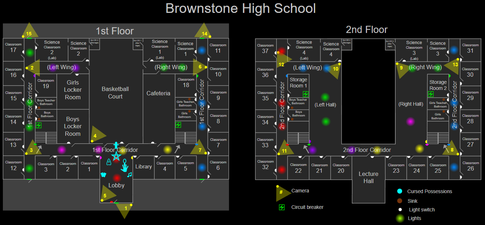

Brownstone High School
Brownstone High School — это карта в Phasmophobia. Это была первая карта среднего размера, добавленная в игру, хотя позже стала картой большого размера.
Её квадратная форма и общая симметрия могут сделать навигацию по ней интуитивно понятной,
а длинные коридоры могут сделать постоянный бег практически невозможным.
Структура
Brownstone High School имеет один передний и один боковой двор (отделённые друг от друга), около трёх десятков классных комнат, восемь ванных комнат,
лекционный зал, столовую и спортивный зал с двумя раздевалками. Всё здание имеет размеры примерно 85 на 55 метров.
На карте Brownstone High School есть пять входных дверей.
Из-за большого расстояния между ближайшим входом и фургоном может оказаться желательным разместить снаряжение поближе к зданию перед входом.

Советы по местоположению
- Все коридоры на обоих этажах не могут быть выбраны в качестве места обитания призрака, что означает, что в этих коридорах не нужно проверять наличие призрачных огоньков. Однако вестибюль (лобби) может быть любимой комнатой призрака.
- Четыре научных класса в задней части здания (два внизу и два наверху) состоят из двух подсобных помещений меньшего размера: классной комнаты со стульями и научной лаборатории с большими металлическими столами.
- На карте есть четыре пары ванных комнат, по одной паре с каждой стороны на каждом этаже:
- Все мужские ванные комнаты находятся слева, а все женские — справа.
- Каждая пара состоит из ванной комнаты ученика (с надписью «мальчики/девочки») и ванной комнаты учителя (с надписью «мужчина/женщина»). Учительская ванная комната находится за «обычной» ванной комнатой (если смотреть в заднюю часть).
- Ванные комнаты дополнительно обозначены как «наверху» или «внизу» соответственно.
- Все классы с номерами от 20 и выше расположены на втором этаже. Остальные — классы 1–19 — находятся внизу.
- Коридор наверху разделён игрой на три отдельные комнаты. Игра называет каждую из этих комнат «Коридором» (а не «Прихожей»).
- В дополнение к дверям и окнам отпечатки пальцев могут появиться и на зеркалах в ванной комнате.
Советы по выживанию во время охоты
- Из-за множества обширных пустых комнат игроку следует спланировать маршрут отступления и место для укрытия, как только призрак будет обнаружен, и всегда быть настороже во время исследования, особенно если место обитания призрака просторное, например, баскетбольная площадка или столовая. Будьте готовы бежать при первых признаках охоты; использование короткого безопасного периода и стратегический спринт могут решить ситуацию между жизнью и смертью.
- Коридоры могут быть опасным местом во время охоты, так как нет ограничения по расстоянию, на котором призрак может увидеть игрока. В сочетании с тем, что призраков можно услышать всего за 20 метров, игроки могут быть внезапно застигнуты врасплох призраком, появляющимся из самого конца коридора на очень высокой скорости, особенно если это Ревенант или Джинн.
- В то время как все шкафчики, найденные на карте, являются просто декоративными и, следовательно, бесполезными, туалетные кабинки — отличное укрытие во время охоты, особенно если призрак не видит, как вы входите в ванную.
- Библиотека содержит несколько блокировщиков поля зрения призрака, которые можно использовать как для того, чтобы спрятаться, так и для того, чтобы отсечь преследующего призрака.
- Раздевалки, расположенные в левой части первого этажа, являются хорошими укрытиями, так как шкафчики разделяют пространство и позволяют легко выйти из поля зрения или отойти в сторону.
- В некоторых классах есть укромные места (например, в углу рядом с некоторыми картотечными шкафами, которые закрывают обзор дверью). Знание того, какие из них работают, а какие нет, может спасти игрока во время охоты. Подумайте о том, чтобы держать открытыми двери в классы, где есть укрытия, и держать закрытыми те, где их нет.
- Наличие благовония в пределах досягаемости может быть очень полезным, когда вы всё ещё пытаетесь собрать улики, в то время как уровень рассудка находится в пределах или близко к порогу охоты, поскольку нарушение поля зрения призрака может быть более трудным из-за того, насколько открыта карта.